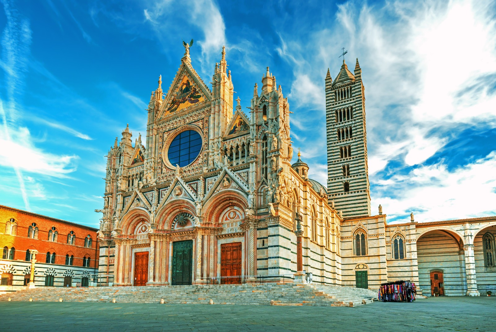
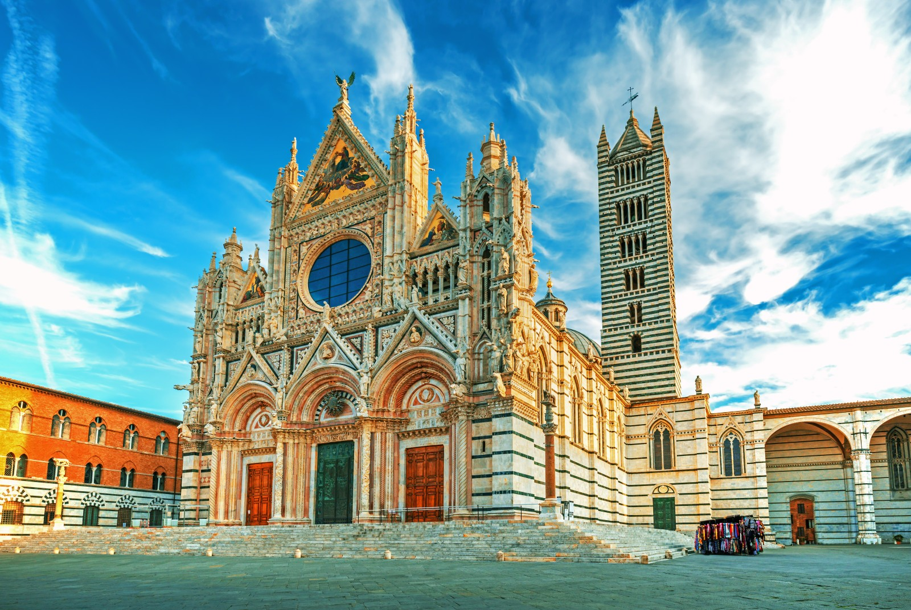
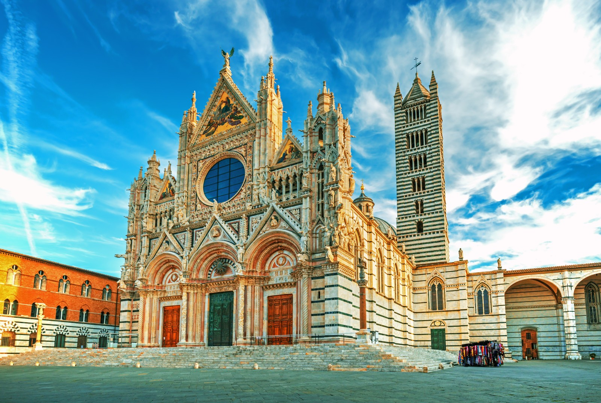

ARTE PASSIONE VALORE
Restauro professionale di beni storico-artistici e culturali
Richiedi informazioni →

Restauro professionale di beni storico-artistici e culturali
Richiedi informazioni →Ric-Art di Riccardo Domenichelli opera nel settore del di beni storico-artistici e culturali con oltre 25 anni di esperienza.
Gli interventi spaziano dalle decorazioni e tinteggiature per le più svariate strutture architettoniche - da antiche chiese e monumenti storici fino ad abitazioni moderne e locali commerciali - garantendo sempre la massima qualità e rispetto per il patrimonio artistico.
Ogni intervento è guidato dal rispetto dei materiali originali, dalla conoscenza delle tecniche tradizionali e dall’attenzione alla storia dell’opera, con l’obiettivo di preservarne il valore nel tempo.

Interventi su pietra, marmo e materiali lapidei storici, finalizzati alla conservazione e al recupero delle superfici originali.
Restauro di superfici decorate, affreschi e pitture murali, con tecniche rispettose dei materiali e della storia dell’opera.

Interventi su edifici storici e contemporanei, con attenzione alla compatibilità dei materiali e al contesto architettonico.

Conservazione e trattamento di contesti e reperti archeologici, nel rispetto delle stratificazioni storiche.
Qualifica riconosciuta ai sensi del D.M. 294/00 modificato dal D.M. 420/01, operante dal 2002. Specializzato nel restauro di beni storico-artistici con competenze certificate nella conservazione del patrimonio culturale italiano.
Contattaci per una consulenza gratuita. Valuteremo il tuo progetto e forniremo un preventivo personalizzato.
Richiedi informazioni ✉️